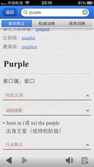
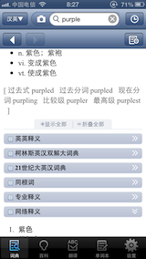
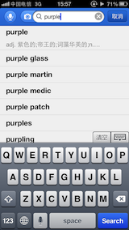
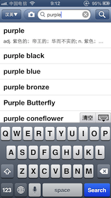
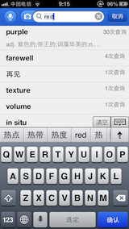

金山词霸&有道词典在用户体验上的对比（IOS）
23,apr,2013我是一个中度手机词典使用者，以下所有看法均为个人主观臆断，请读者斧正。有道词典有英法日韩对汉语的互译，这里只讨论英译汉。讨论所用版本分别为：金山词霸 for IOS（5.6.2），有道词典 for IOS（3.5.0），下文简称词霸和词典。
进入对比之前先来分析一下用户使用手机词典时的情境：
查单词的行为是当用户不认识某个单词时产生的，此时用户处于一种急需获取词义的情绪激活状态，可能有如下几种情况：用户不认识某个单词；见过该词但怎么都想不起来是什么意思了；觉得这个词可能是某个意思但不能确定，为保证正确还是查一下词典。不论是上述哪种情况，此时用户总体上是处于一种负性情绪之下，且学习本来就是一个枯燥乏味的活动。用户在这种情况下打开了手机辞典，试图获取某个单词的含义。
一，设计篇。
1，主界面。
两个词典从主界面UI看提供的功能基本相同（查词、单词本、资讯、翻译、设置），但这些功能按钮的设计和布局却差很多。
（1）金山词霸，功能图标统一放入灰色格子淡出用户视线，彩色设计改善用户体验突出输入框。
词霸采用彩色设计并突出输入框，给枯燥的查词行为加入一些色彩改善使用体验，且突出的输入框能够使处于情绪激活状态的用户快速且不费力的找到搜索入口。
主界面分为三部分：顶层IOS状态栏（黑色底色），第二部分查词区（主体蓝色）、logo、button和搜索框白色突出，第三部分功能区形象化设计的图标放在相同规格的灰色格子中淡出用户视线。主UI的设计通过颜色反差和相同的灰色格子设计淡出视线，突出输入框，使用户在只是查单词（词典最核心的功能和用户最主要的需求）的时候，几乎不会注意到别的功能按钮，也不会增加用户的视觉负担，而当用户想要使用别的功能，他们会很容易的找到这些功能的入口。因为这种设计并没有把功能按钮藏起来或者放在二级菜单，而是通过使用不明亮的格子颜色低调的放在主UI，用户不用的时候是下意识的忽略这些图标的，但当用户意识上产生了想要使用这些功能的想法后，这些大图标又会立刻“出现”在用户的视线中。
（丁小云在他的豆瓣阅读小书《7天克服拖延症》中提到了《佐藤可士合的超整理术》，下面饮用他书中的话：我个人认为佐藤可士合的空间整理术最值得借鉴的地方就是：他会利用储物架和很多外形一样的箱子将必须保留的一些乱七八糟的东西收纳其中，以这种方式让物品从他的视线中消失，进而达到工作环境舒适化的惊人效果。“通过统一箱子的规格，不止是箱子内的东西，就连箱子的存在感都一并消失，这有助于集中注意力”。）。
（2）有道词典主界面使用IOS系统颜色，图标堆砌重点不明。
讨论有道主界面UI前先说一下，有道词典最新版加入＂复制查词＂功能后，载入时有0.5秒左右的明显感觉的到的画面停顿，这对于一个急于查询单词意思的用户来说，是很差的用户体验。
有道词典主界面UI几乎没有经过设计，只是把各种功能按钮摆放在主界面中，这种＂不设计＂有很多问题：
1.UI颜色直接使用IOS系统默认颜色，黑白灰且与系统相同的色调不但不能缓解学习时的枯燥乏味反而会加重。输入框空间很小，使用IOS默认颜色时与系统状态栏的各种图标混为一体，使用时很容易视觉疲劳。
2.主UI很大部分被“每日一句”占据，图片在灰白色背景下是主界面设计视觉上唯一突出的点，可是这却不是词典的主要功能，而且这部分内容每天更换根本无法针对背景进行优化。
3.功能按钮位于底栏采用黑色与“每日一句”的白色底色同属黑白色调，视觉上虽然可以明确区分，但心理上用户会把它们当作一起的而不做视觉区分，我自己的实际使用就说明了这一点：我在用有道的很长一段时间里根本就没有意识到有前4个按钮，除右下的“设置”外（因为每个app都会有“设置”项且很有可能位于右下）。
2，输入单词时的界面。
（1）金山词霸显示查询记录，单词多次刺激，加深记忆。
点击输入框之后，词霸主界面消失，键盘弹出，中间部分显示倒叙查词记录（词条黑色显示，查询次数灰色显示，还会显示最新查过的一个单词的释义），这样每次用户查询新词、屏幕就会显示最近查过的7个单词，灰底黑字，多次刺激有助记忆。并且黑色相对于蓝色输入框部分并不惹眼，不会喧宾夺主，主次依旧分明。
这里词霸对键盘右上角的“清空”和“收起键盘”标签的字体和线条设计得很细，目的应该是使其在视觉上不干扰到查询记录显示的单词，不得不说词霸在设计上还是很用心的。
（2）有道词典保持主背景。
有道则没有什么变化，继续保持每日一句为背景，只是键盘弹出覆盖底部功能区和资讯中的文字部分（点击空白处文字可以浮上来，这恐怕是有道唯一设计过的地方了）。这里认为可以学习词霸的做法，在输入单词时显示查询记录。
3，单词释义界面。
（1）金山词霸多词典多功能两种逻辑显示，逻辑正确但困扰用户；词典功能条目默认全部打开，使用不便。

词霸不同的词典释义在上方呈标签形式，不同词典功能则在基本释义后面默认打开。从绝对的逻辑上来说，这种区分是正确的，但是在用户体验上来说，同样都是基本释义的扩展部分，如果分开显示，用户想要查看某个部分的时候，需要经过一个逻辑思考过程，来搜索想要的扩展属于哪个逻辑部分在哪里找到。虽然是很简单的逻辑，但是这个思考是完全不必要的，也会困扰用户。（这也是罗永浩最近表示的在Smartisan OS中与产品经理发生意见矛盾的地方：逻辑一致性的优先级要高于操作效率。）
词霸设计了单词页的背景图，看着很舒服。但字体过大排版不合理每屏显示内容太少，用户看起来很麻烦。在单词界面默认提供例句、同反义词、词组搭配、行业释义等各种词典功能，且默认呈下拉状态，这些都是次级需求，如果直接呈现给用户的话，不需要的用户看着烦人，需要的用户找起来也很麻烦。这些部分虽然都可以收起，但是不会记录用户收起的项目，下次查询别的单词又会自动呈下拉状态。建议记录用户选择收起项，并且优化条目的显示方法。
现在的显示方法设计很不舒服，一条横线和一个收起箭头／下拉箭头，功能上一定可以让用户知道点击箭头可以收起／下拉条目，但是用户无法知道可不可以点那条线来达到目的，因为对准那条线看起来比较容易。真实情况确实是比较容易，＂那条线＂的触发区域还是很大的，但这个设计仍然是个败笔，因为用户在知道有很大的触发区域之后反而会产生很不舒服的感觉：明明知道点在线附近就可以，偏偏从设计上设计成一条细细的线，以至于每次点的时候都有一种很不舒服的感觉。最好采用点击标签显示，并且让用户定制收起／下拉状态。
（2）有道词典丰富功能标签显示，查看方便。专业功能和排版增加用户信任感。

有道词典进入词条后默认只显示基本解释，简洁有效。点击进入＂网络释义＂后的效果可以用＂惊艳＂来形容，丰富的不同词典和功能（英英释义、柯林斯英汉双解、21世纪大英汉词典、同根词、专业释义、网络释义、图片释义、词组短语、同近义词、双语例句、权威例句、原声例句）以标签形式排列在一起，简单明了，让人非常有点开看看是什么的冲动。还有＂显示全部＂和＂折叠全部＂的按钮，使用起来非常舒服。
一个问题是：这些词典功能中有几个是默认打开的（网络释义、词组短语、双语例句），个人认为这样会分散用户视线，导致打开“网络释义”后仍然是大量的信息呈现给用户，我自己在以前使用过程中就是被这些打开的项目分散了视线，导致根本没兴趣看下去，也根本不知道原来有道提供了这么多条理清晰丰富专业的解释，因为几个默认的打开项导致用户无法感知到清晰的条理。设计手机APP时要考虑到用户每次只能看一屏内容，如果是几屏连续的内容，用户是很难从心理上把它们连起来获得一个感性的认识的。当它们都被收起来时，就清晰多了，需要什么就打开看，而且即使不需要的也有一种探秘的心态促使用户打开一看究竟。标签的设计方法用户可以很容易的知道点标签的任何部分都可以打开这些项目，并且点起来也不会有心理上很奇怪的感觉。
但这些标签和词霸一样不能记忆功能标签的打开关闭，可能是随时记忆用户选项会牺牲程序流畅性；那可以选择折中的办法，考虑到如果用户每次偶尔打开某个选项并没有打算长期阅读却被程序＂自作聪明＂的记忆下来的问题，这可能是更好的办法：在设置中添加选项让用户可以选择哪些条目默认打开哪些默认关闭，让用户可以在一定程度上定制功能但又不会使程序太自作聪明。
二，功能篇。
两个词典提供的主要功能可谓几乎相同：查词、单词本、资讯、整句翻译、拷贝取词。这里不涉及词典内容的讨论，只从用户体验上讨论几个两个词典的通病。
1，查询记录丢失单词。


两个词典在词条输入完毕后都需要点键盘上的search键或点预览显示的单词才能进入单词界面，进入单词界面后该单词才进入查询记录。但用户在输完单词还没点击进入单词界面时，已经通过预览看到单词词义，大部分情况下不需要再进入单词界面。那么这个单词就不会进入查询记录，就导致查询记录丢失大量用户查过的单词，如果用户想要把这个单词加入查询记录从而加入单词本，则必须在不需要（已知词义）的情况下点击search或词条进入再退出，这是相当恼人的。有一个很好的解决办法：添加长按“search”按钮的功能，长按后会直接将当前预览单词加入单词本（同时进入查询记录），而无需进入单词页面。
（除了这个方法外一些软件自动处理的方法都会带来更多更大的问题：比如如果把预览内容自动加入记录，产生的问题是以何时的预览内容为准，英文输入法下每输入一个字母预览就会发生改变。如果设定每个单词停留1s就会进入查询记录，这样的问题是会使用户在没有输入完毕时急着输入不能停顿，而输入完毕后又要刻意的停留1s的时间，而且非常容易造成误操作而把不需要的单词加入记录，这也是很差的用户体验。如果使用类似于输入法的得到想要的词后空格确认再将预览单词加入记录的方法，看似很好的解决了这个问题。但它却破坏了电子词典的一个妙用：看着单词生成与改变，就是随着单词的输入预览内容：很多非词根单词多是有2个词根组成再加一些词缀，这样对于很多单词，用户就可以在输入的过程中通过预览了解到这个词的构词方式、或者不需要输入完毕已经知道了词义、或者输入完毕后通过改变后缀学习相同词根单词的意思。这个功能可以说是电子词典相比纸质词典的一个非常美妙的功能，这种解决方案可以说是得不偿失了。）
2，默认输入法随系统输入法变化。

两个词典打开之后默认的输入法都是系统当前输入法，导致的问题是用户每次进入词典都得先切换输入法为英文（作为一个手机词典的使用者，当用户打开词典的时候，输入法几乎一定是汉语）。如果用汉语输入法输入英文必须在输完英文之后再确认才会输入词条，比英文输入多一个键；当然汉语输入可以检查拼写（拼写错误的单词会试图当拼音理解而显示汉字），但在一些长词或偏词或组合词时由于输入法无法识别为英文，又会失效造成非常差的输入体验。更不用说用户失去了看着这个单词生成的美妙体验与功能。这个显而易见的非常影响使用体验的问题竟然两个词典都存在，推测可能是IOS系统没有给予app修改键盘的权限（同样试过在Android也是一样）导致的。
3，＂拷贝取词＂功能。
 ＂拷贝取词＂功能使用户可以在浏览器或其它软件下阅读内容时（主要用于英文内容），遇到不认识的单词直接复制，软件即可自动推送单词释义。这是一个很好的功能，但在IOS中有一个问题就是，系统会停止后台软件运行，停止运行后这个功能就失效了。
＂拷贝取词＂功能使用户可以在浏览器或其它软件下阅读内容时（主要用于英文内容），遇到不认识的单词直接复制，软件即可自动推送单词释义。这是一个很好的功能，但在IOS中有一个问题就是，系统会停止后台软件运行，停止运行后这个功能就失效了。
这个问题金山词霸没有进行处理，直接停止运行也不提醒用户。有道词典的做法是每当软件即将后台停止的时候会推送提醒给用户，告知用户软件即将停止运行，并且给出了解决方法就是点击推送来激活。这种方法虽然表现了诚意但未免好心办了坏事，实际使用中这个提醒是很烦人的，因为用户需要在英文阅读过程中被打断去点击推送进入词典再回到阅读内容，而这一系列操作并没有给用户带来直接的成果。IOS系统允许APP后台运行时间为10分钟，据我自己粗略测试有道词典会在9分半钟推送提醒，还是比较频繁的。相比于直接停止运行，用户在需要查词时复制单词再打开词典，此时词典自动显示剪贴板单词含义的方法，虽然减少了操作，但我更倾向于后一种方法。因为后一种方法是在用户有需求时发起并且伴随获得释义结束，虽然操作多了几步，但从心理上更能接受。这么说来还是金山词霸的方法较好，不知道金山是无心插柳还是有意为之。
（有道的推送提醒也许换一个逻辑要好很多，就是推送提醒用户点击推送即可停止软件后台运行，不点击就保持激活状态，直至手机锁屏或长时间未打开软件。但仍然是权限问题，APP依托于操作系统而存在，同时也受制于操作系统的限制，没法把功能做到极致。）
三，总结。
写这篇对比初稿的时候，由于玩的还不够深入，觉得金山词霸做的比有道词典认真多了，抓到了很多有道很奇怪的让人感觉做的很随意的地方。我自己一直用有道，身边的朋友老师也推荐有道，这使我在一开始发现词霸设计较好时感到很困惑，直到我看到有道词典点击“网络释义”之后“惊艳”的效果。
有道词典官网对网络释义的介绍如下：有道网络释义是指有道搜索引擎在抓取并获得多达数十亿的海量网页数据后，利用有道独创的“网页萃取”（Page Extraction）技术进行信息理解、数据挖掘和文本分析工作，从中找出互为翻译关系的中外文词汇和句子，再根据它们在海量网页中出现的频次、位置等因素优化调整，从而得到最佳翻译结果。实际使用中的效果还是非常好的，并不会感觉是电脑处理的非常粗糙的结果，可以看得出做过很好的优化调整和排版。整体上给用户很丰富很专业的感觉。由于这是技术层面的内容，我们不做深入讨论。
有道词典抓住了作为一个词典最核心的东西：使用户最快获得最丰富精确的单词释义，或者至少是这样的错觉。平心而论，大部分用户在大部分时候都不会用到有道所提供的丰富精确的词典内容，但是当用户看到自己的词典有这些丰富精确的内容提供时，他们对这个词典的信任就建立了，他们会觉得：这个词典很专业，我就要用这个词典。
这也是做产品的两个面向：好用还是好看。产品一定是先做到好用，在“好用”基础上的“好看”才是能击中用户痛点的。对比到这里不得不说：金山好看，有道好用。